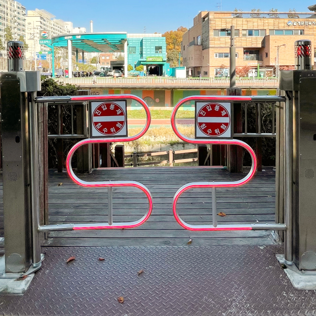
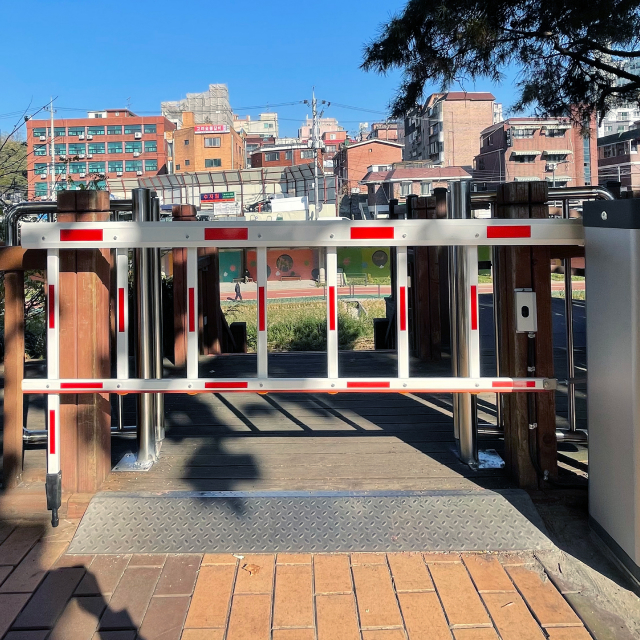

스마트 안전게이트IoT Safety Gate
진출입 게이트
진출입 게이트는 주로 하천변 산책로 입구와 등산로 통제 지점 등에 설치하여 이러한 악천우로부터 인명피해를 방지하기 위하여 설치합니다. 또한 도래샘의 진출입 게이트를 설치하면 원격(PC, 핸드폰)에서 여러개의 게이트를 동시에 열고 닫을 수 있습니다. 스마트 원격관제시스템을 도입하여 실시간으로 확인하고 제어하여 효율적으로 재난상황에 대처할 수 있습니다.
-
원격 관제 
- 스윙식 진출입 게이트 [회전(Swing), z축(yaw)]
- 진출입 게이트는 폭우, 태풍 등 악천우로부터 하천 범람, 등산로 고립 및 실족 등을 방지하기 위하여 하천변 산책로와 교량, 등산로에 설치합니다.
또한 원격(pc, 핸드폰)에서 진출입 게이트를 실시간으로 확인하고 제어하여 빠르고 효율적으로 재난상황에 대처할 수 있습니다.
활용범위 : 3m 이내 공간
-
원격 관제 
- 차단식 게이트 [회전(Swing), x축(roll)]
- 진출입 게이트는 폭우, 태풍 등 악천우로부터 하천 범람, 등산로 고립 및 실족 등을 방지하기 위하여 하천변 산책로와 교량, 등산로에 설치합니다.
또한 원격(pc, 핸드폰)에서 진출입 게이트를 실시간으로 확인하고 제어하여 빠르고 효율적으로 재난상황에 대처할 수 있습니다.
활용범위 : 3m 이상 공간
-
원격 관제
- 하강식 게이트 [슬라이딩(Sliding), z축]
- 진출입 게이트는 폭우, 태풍 등 악천우로부터 하천 범람, 등산로 고립 및 실족 등을 방지하기 위하여 하천변 산책로와 교량, 등산로에 설치합니다.
또한 원격(pc, 핸드폰)에서 진출입 게이트를 실시간으로 확인하고 제어하여 빠르고 효율적으로 재난상황에 대처할 수 있습니다.
활용범위 : 터널, 교량 및 6m 이상 공간
보행자 안전 기능
공통
-
- 경광등 (시각적)
- 안전게이트 작동 시 경광등이 회전하며 깜빡입니다. 주변 보행자 등에게 시각적으로 안전게이트의 작동을 인지하게 하여 주의를 환기시킵니다.
-
- 사이렌 (청각적)
- 안전게이트 작동 시 경광등 작동과 함께 안내 음성이 스피커를 통해 전달됩니다. 주변 보행자에게 청각적으로 안전게이트의 작동을 인지하게 하여 주의를 환기시킵니다. 또한 안내 음성의 내용을 녹음하여 원하는 정보를 전달할 수 있습니다. (하천 범람 주의 안내 등)
진출입 게이트
-
- 비상버튼
- 출입구 안쪽에 설치된 비상버튼으로 진출입 게이트가 닫힌 상태에서 하천 내 고립된 보행자가 게이트를 스스로 열고 나올 수 있는 버튼입니다. 비상 열림 버튼을 누르면 게이트가 열리며 일정 시간(10~15초)이 지난 후 다시 작동하여 닫힙니다.
-
- 인체감지 센서
- 진출입 게이트가 닫혀 있는 상태, 즉 하천 범람 등의 이유로 게이트를 닫아 진출입을 폐쇄한 상태에서 1~2미터 이내 게이트에 다가오는 사람이 있으면 이를 감지하여 사이렌(안내 음성)을 재생합니다.
-
- 게이트 작동 중 끼임 방지
- 진출입 게이트가 닫히는 작동 중에 보행자 또는 물체가 닿으면 닫히는 동작을 멈추고 문이 열립니다. 이후 일정 시간(10~15초)이 지난 후 다시 작동하여 닫힙니다.